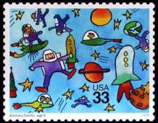
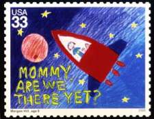
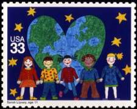
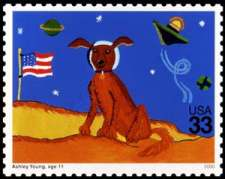
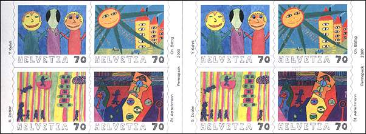
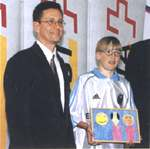
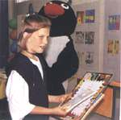
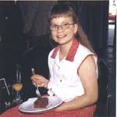
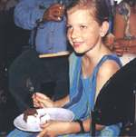
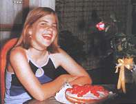

Stampin the Future - 1
In celebration of the approaching 21st century, the Postal Service held Stampin' The Future, a youth stamp design contest for children 8 to 12 years of age. Kids from the U.S. and its various territories and possessions were invited to submit designs based on their visions of the 21st century. The winning designs were exhibited at the World Kids Congress, hosted by the Postal Service as part of World Stamp Expo 2000, an international philatelic exhibition held July 7-16, 2000, in Anaheim, Calif. The interest for the contest was very high, about 37'000 young participants being involved.
The artwork of four young USA visionaries, Zachary Canter's "Astronauts," Morgan Hill's "Rocket," Sarah Lipsey's "Children" and Ashley Young's "Dog" - is showcased on the engaging stamps issued by the United States Postal Administration (see below).
 |
 |
 |
 |
In September 2000, the Swiss Postal Administration has issued in a booklet four different stamps, designed by the winners of the Swiss contest. The booklet, with all eight stamps that it contains, is shown below.

The contest was won by the design of Yannick Kehrli, "The Extra-terrestrial", showing an extra-terrestrial between two humans. The stamp of Charlotte Bättig, ""The Look under the Sun", shows a sun, a city and many eyes that look at you. The third prize was won by Sandra Dobler, with its drawing "The perfect world", with little creatures displayed in an interesting combination of colors. It's Stephanie Aerschmann who has won the forth prize for "My city", a colorful and merry work.
 |
 |
 |
 |
Correction, from the Swiss Post
|
 |
From the FOCUS on Stamps magazine, No. 5/2000, we learn that the picture of the girl who won the forth prize is not that of Stephanie Aerschmann. The correct picture is shown on the left. I have decided to not replace the picture of this nice girl, even if it's easy, because she's so nice. We will never know who she is and why did she appear, but this is less important. Maybe one day she will also win something important for her. |
|||
Sources:
-
USPS Web site
-
FOCUS on stamps, 4/2000 & 5/2000
Links:
| Created 08/10/2000. Revised: 12/04/08. Copyright © 2000 by Victor Manta, Switzerland. All rights reserved in all countries. |
|